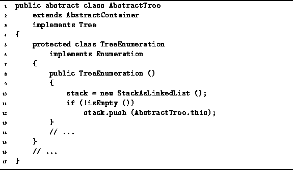

Data Structures and Algorithms
with Object-Oriented Design Patterns in Java
Data Structures and Algorithms
with Object-Oriented Design Patterns in Java
The code for the TreeEnumeration constructor
method is given in Program  .
The constructor is quite simple.
First, a new instance of the StackAsLinkedList class is created.
(The linked-list implementation of stacks
is described in Section ).
Then, the tree is pushed onto the stack (provided it is not the empty tree).
.
The constructor is quite simple.
First, a new instance of the StackAsLinkedList class is created.
(The linked-list implementation of stacks
is described in Section ).
Then, the tree is pushed onto the stack (provided it is not the empty tree).

Program: AbstractTree TreeEnumeration constructor.
An empty stack can be created in in constant time. In addition, the tree can be pushed onto the empty stack in constant time. Therefore, the running time of the constructor is O(1).
 Copyright © 1998 by Bruno R. Preiss, P.Eng. All rights reserved.
Copyright © 1998 by Bruno R. Preiss, P.Eng. All rights reserved.